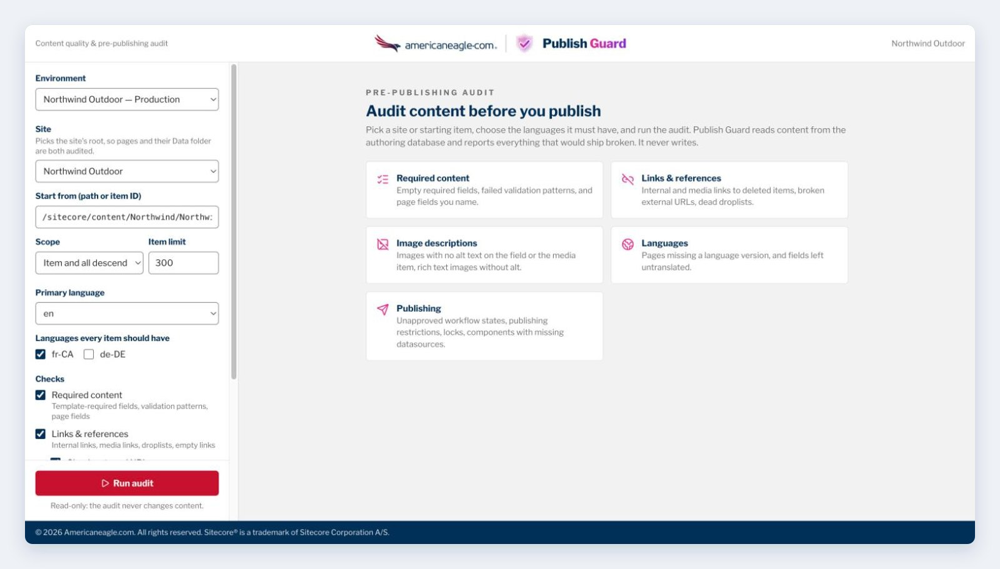
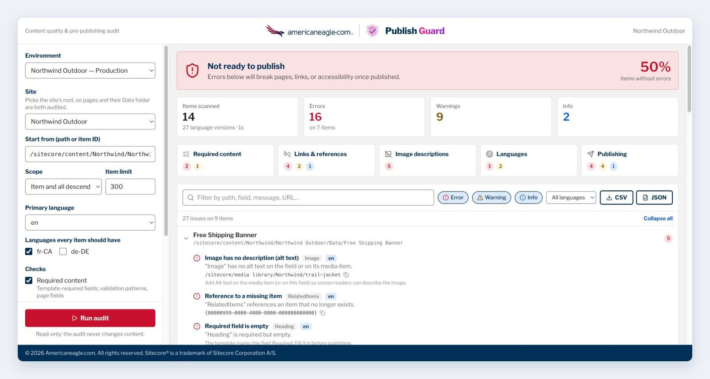
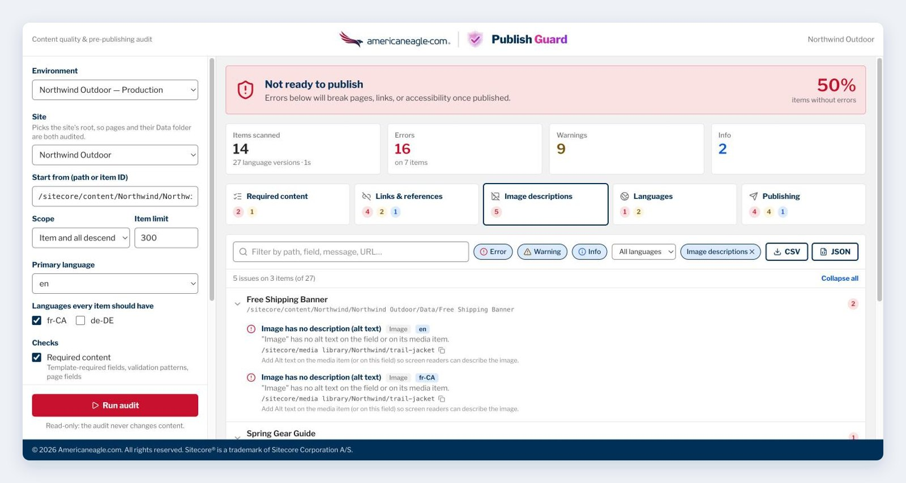
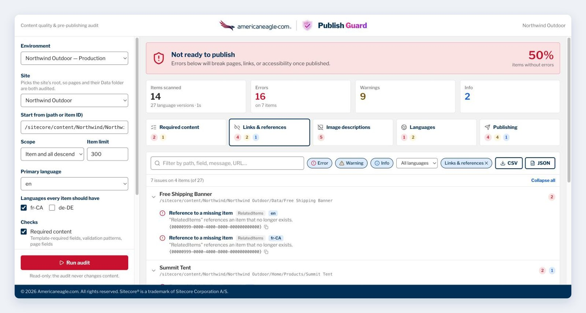
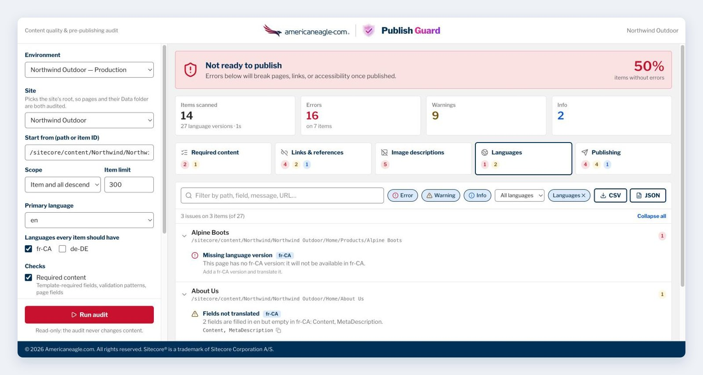
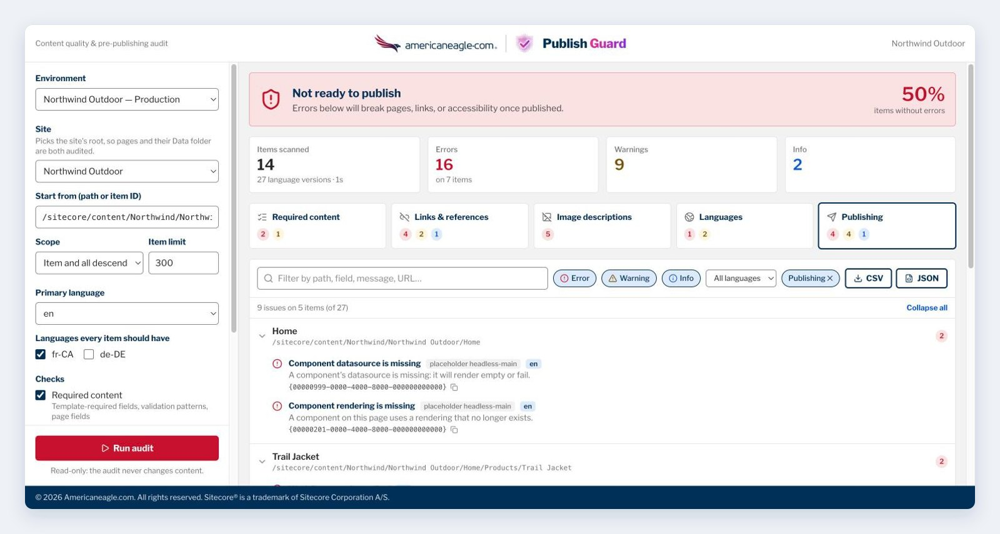

A step-by-step guide to Publish Guard by AE, the SitecoreAI Marketplace app that audits a whole site for empty required fields, broken links, missing alt text, incomplete languages and publishing blockers before you release.
Every SitecoreAI release has the same last-minute questions. Did anyone leave a required field empty? Does that promo still link to a page we deleted? Do the new hero images have alt text? Is the French version of the product page actually there? Will the page even publish, or is it still sitting in a Draft workflow state?
Publish Guard by AE answers those questions in one pass. It is a SitecoreAI Marketplace app, built by Americaneagle.com, that audits a whole site (or any part of it) and reports everything that would ship broken, with a clear release verdict at the top. It is read-only: it never creates, changes or deletes content.
This guide walks through installing it, running your first audit, and turning the results into a fix list.
An audit covers five categories. You can switch any of them off before you run.
| Category | What it finds | Severity |
|---|---|---|
| Required content | Fields marked Required on their template (including inherited base templates) that are empty in any audited language; values that fail the field's validation pattern; page fields you name, such as Title or MetaDescription. | Error / warning |
| Links & references | General Link and Rich Text links to deleted items or media; Droplink, Multilist and Treelist references to deleted items; empty links (#, no URL); external URLs that return 404, 410 or 5xx or fail DNS; insecure http:// links. | Error / warning / info |
| Image descriptions | Image fields with no alt text on the field and none on the media item; Rich Text images with no alt attribute; images pointing at deleted media. | Error |
| Languages | Items with no version in a language they should have (an error for pages, a warning for other items); fields filled in the primary language but empty in a translation. | Error / warning |
| Publishing | Versions in a workflow state that is not final; Never publish and Hide version; scheduled and expired publishing dates; locked items; components whose rendering or datasource no longer exists. | Error / warning / info |
Errors are things that will break a page, a link or accessibility once published. Warnings deserve a look but don't block the release. Info items are worth knowing, such as an http:// link or a page scheduled to go live later.
No API keys or credentials are needed: Publish Guard uses the SitecoreAI APIs that the Marketplace grants to the app, and only the environments you installed it on appear in its list.

/sitecore/content/…) or item ID, if you want to audit a single section instead of the whole site.Set the primary language (usually en), then tick every language each item should exist in under Languages every item should have. When you pick a site, Publish Guard preselects the site's own languages.
For each required language, Publish Guard checks that a version exists and that fields filled in the primary language are not left empty in the translation. Shared and unversioned fields are skipped, because they are the same in every language.
All five categories are on by default. Two options are worth knowing about:
Title) checked on every item that has a layout, on top of the template's own Required fields. Add MetaDescription, NavigationTitle or anything else your sites rely on.Your choices of checks, page fields, scope and item limit are remembered in your browser for the next audit.
Click Run audit. A progress card walks through five phases: Find items, Read content (every item in every selected language), Read templates (including base templates, so inherited Required fields count), Check references (every link target, media item, datasource and rendering, looked up in bulk), and Check external links. A typical site of a few hundred items finishes in seconds. You can cancel at any time.

The banner at the top gives the release verdict:
| Verdict | Meaning |
|---|---|
| Not ready to publish | At least one error. Something will break a page, a link or accessibility once published. |
| Ready, with warnings | No errors, but some content needs a look. |
| Ready to publish | No errors or warnings in this scope. |
The percentage on the right is the share of scanned items with no errors. Below it are the totals (items scanned, language versions read, errors, warnings, info) and one card per category. Click a category card to filter the issue list to it; click it again to clear the filter.
Issues are grouped by item, with the item's name and full path. Each issue shows what is wrong, the field and language, the exact target (a media path, a missing item ID, a URL) with a copy button, and a hint on how to fix it.

Publish Guard looks for alt text on the image field first, then on the media item. If neither has any, it reports the media item's path, so you can add Alt text once in the Media Library and fix every page that uses that image. Rich Text images need an alt attribute; alt="" is accepted as purposely decorative.

A broken internal link or reference shows the ID of the missing item. Usually the target was deleted or moved to another environment and never brought back. Point the field at the right item, or remove the reference. Broken external links show the HTTP status or reason (for example DNS lookup failed). Links the checker could not verify, such as a site that blocks automated requests with 403 or 429, are reported as info rather than errors.

A page with no version in a required language is an error, because that page will not be available in that language. Other items (datasources, folders) are warnings. Fields not translated lists every field that has content in the primary language but is empty in the translation.

Publishing issues are the ones that most often surprise people on release day:
__Renderings and __Final Renderings are checked, including local: datasources.After fixing content in SitecoreAI, click Run audit again to confirm the verdict changes.
query:) can't be resolved without running them, so they are not checked.No. It only reads content and reports what it finds.
Anyone in your organization who can open the app. It uses the SitecoreAI access the Marketplace grants to the app on the environments it is installed on.
The usual causes are a version still in a Draft workflow state, a component whose datasource was deleted, or a missing translation for a language your site requires. The issue list names the exact field, language and target.
Yes. Paste the page's path or item ID into Start from and choose This item only.
Publish Guard is built by Americaneagle.com. For support, contact us. Its sibling app, Content Transfer by AE, copies content between SitecoreAI environments. A how-to guide for it is also on this blog.